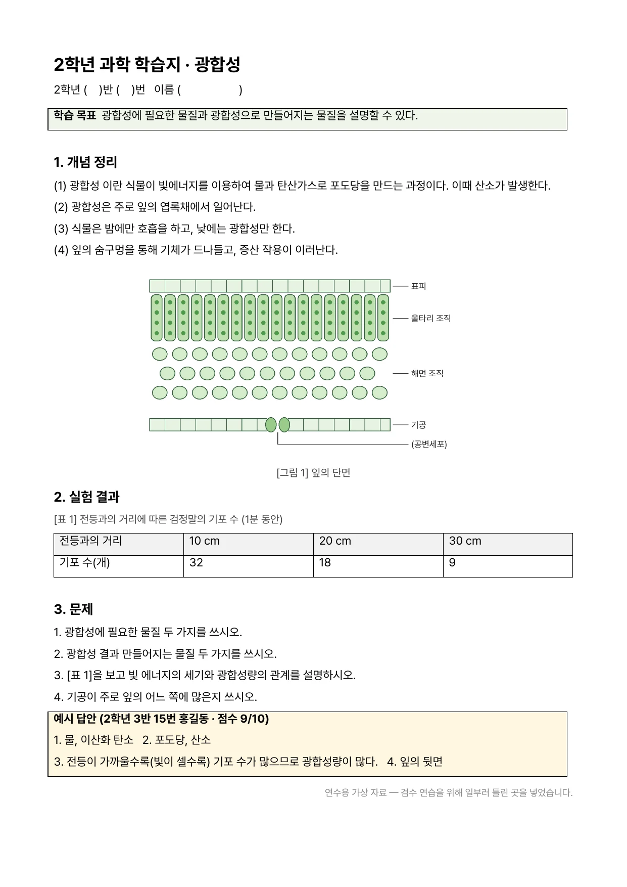

스킬 설치해서 쓰기
«수업 자료 검수» 스킬을 Code 탭과 claude.ai 계정에 설치하고, 연습용 학습지를 검수해 봅니다. 스킬이 무엇이고 어디에 두면 어디서 쓰이는지 익힙니다.
- 목표
- «수업 자료 검수»(
lesson-check) 스킬을 설치하고, 일부러 틀린 곳 10군데를 넣은 학습지를 검수해 결과 표를 받는다 (예시: 중학교 2학년 과학 «광합성» 학습지 — 오탈자·용어·개인정보·출처·내용 오류) - 준비물
- 스킬 l11-lesson-check.zip 과 연습 학습지 practice-photosynthesis.docx 를 넣은
클로드연수/11차시폴더 (모두 가상 자료) - 결과물
- ① Code 탭에서
/lesson-check로 부르는 개인 스킬 ② claude.ai 계정에 올린 같은 스킬(코워크·채팅용) ③ 검수 결과 표 · 더 해 보기: 공식 스킬 켜기, 계획 세우기 스킬로 만든CLAUDE.md - 주의
- 남이 만든 스킬은 내용을 먼저 읽고 설치 · 연습에는 실제 학생 자료를 쓰지 않기
1차시의 정리규칙.md 처럼 매번 붙여 넣던 지시문을 폴더 하나에 담아 두고, 클로드가 필요할 때 꺼내 쓰게 한 것이 스킬입니다. 스킬의 핵심은 SKILL.md 파일 하나입니다. 맨 위에 이름(name)과 언제 쓰는지(description)를 적고, 그 아래에 할 일을 씁니다. 클로드는 평소에는 이름과 설명만 보고 있다가, 관련된 일을 맡으면 본문을 읽어 그대로 따릅니다. 이 차시의 핵심은 둘입니다. 스킬은 둔 곳에 따라 쓰이는 곳이 다르다는 것, 그리고 받은 스킬은 읽어 보고 설치한다는 것입니다.
먼저 볼 영상

1 준비
클로드연수안에11차시폴더를 만들고, 위 준비물 두 파일을 받아 넣습니다. zip 은 아직 풀지 않습니다.- SKILL.md 내용을 먼저 읽어 봅니다. 결과 예시에도 전체가 있습니다. 남이 만든 스킬은 이렇게 무엇을 시키는지 읽어 본 뒤 설치합니다.
- 스킬을 두는 곳은 세 군데이고, 둔 곳에 따라 쓰이는 곳이 다릅니다.
둔 곳 쓰이는 곳 알아 둘 점 개인 스킬 ~/.claude/skills/이름/SKILL.md
윈도우C:\Users\사용자이름\.claude\skills이 컴퓨터의 Code 탭 — 어느 폴더를 열어도 코워크·클라우드 세션에서는 쓰이지 않음 프로젝트 스킬 작업폴더/.claude/skills/이름/SKILL.md그 폴더를 연 Code 탭 세션 폴더째 동료에게 주면 스킬도 함께 감 claude.ai 계정
Customize → Skills 에 올림코워크, 채팅, 같은 계정의 Code 탭 zip 으로 올림 · 코드 실행 기능이 켜져 있어야 함
2 따라 하기
번호 순서대로 진행합니다. 프롬프트가 필요한 단계에는 바로 아래에 복사 단추가 있습니다. Code 탭을 쓰면 (가), 코워크·채팅만 쓰면 (나)부터 해도 됩니다. (라)·(마)는 시간이 남거나 혼자 연수할 때 하는 «더 해 보기»입니다.
(가) Code 탭에 설치해서 쓰기
- 데스크톱 앱 사이드바 맨 위의 Code 탭에서 환경은 Local 맨 위 항목, 폴더는 Open folder… 로
클로드연수/11차시를 고르고, 권한 모드를 Manual 로 둡니다. - 설치를 맡깁니다. 클로드가 먼저 스킬 내용을 읽고 위험한 지시가 없는지 알려 준 뒤 설치합니다. 파일을 만들 때마다 승인 단추가 나오면 내용을 보고 승인합니다.
이 폴더의 l11-lesson-check.zip 은 수업 자료 검수 스킬입니다. 1. 압축 안의 SKILL.md 를 읽고, 무엇을 하는 스킬인지 세 줄로 알려 주세요. 2. 파일을 지우거나, 인터넷으로 보내거나, 프로그램을 설치하라는 지시가 있는지 확인해 주세요. 3. 문제가 없으면 내 개인 스킬 폴더(~/.claude/skills/)에 lesson-check 폴더째 설치해 주세요. 4. 설치한 경로와 SKILL.md 맨 위의 name, description 을 보여 주세요.
직접 설치해도 됩니다. zip 을 풀어 나온
lesson-check폴더를 통째로 개인 스킬 폴더(윈도우C:\Users\사용자이름\.claude\skills, 맥은 홈 폴더의.claude/skills)에 넣습니다.skills폴더가 없으면 만듭니다. 맥 Finder 에서 점(.)으로 시작하는 폴더가 안 보이면 Cmd+Shift+. 을 누릅니다. - 프롬프트 상자에
/를 입력합니다(또는 상자 옆 + 단추 → Slash commands). 목록에 lesson-check 가 보이면 설치된 것입니다.캡처 넣을 곳 · L11-1/를 입력해 나온 목록 ((가) 3번).- 빨간 상자: 목록의 lesson-check 와 그 설명
- 스킬을 불러 검수합니다. 목록에서 lesson-check 를 고르거나
/lesson-check를 입력하고, 그 뒤에 할 일을 이어 써서 보냅니다./lesson-check 이 폴더의 practice-photosynthesis.docx 를 검수해 주세요.
프롬프트가 한 줄뿐인데도 점검 항목 다섯 가지, 보고 표의 열, «원본은 고치지 않기», «개인정보는 가려 쓰기»가 모두 지켜지는지 보세요. 그 지시가 전부
SKILL.md에 들어 있기 때문입니다.캡처 넣을 곳 · L11-2
검수 결과 표 ((가) 4번).- 빨간 상자: 프롬프트 상자에 강조되어 들어간
/lesson-check - 번호 표시: ① 한 줄 요약 ② 결과 표
- 빨간 상자: 프롬프트 상자에 강조되어 들어간
- 저절로 쓰이는지도 봅니다. 새 대화에서 스킬 이름을 쓰지 않고 «이 폴더의 학습지를 학생에게 내기 전에 검수해 주세요»라고 보냅니다.
description과 맞는 일이면 클로드가 스킬을 알아서 꺼내 씁니다. 같은 표 형식으로 답하면 스킬이 쓰인 것입니다.
(나) claude.ai 계정에 올려서 코워크·채팅에서 쓰기
- 코드 실행 기능을 켭니다. Pro·Max·Ultra 는 설정 → Capabilities 에서 Code execution and file creation(새 설정 화면에서는 Create and edit files)을 켭니다. Team 은 기본으로 켜져 있고, Enterprise 는 기관 소유자가 켜야 합니다. 메뉴 이름은 Claude 도움말(영어) 기준이며, 한국어 화면에서는 화면 문구를 따릅니다.
- 스킬을 올립니다. Customize → Skills 에서 + 단추 → + Create skill → Upload a skill 을 고르고,
l11-lesson-check.zip을 그대로 올립니다. 목록에 lesson-check 가 생기고 스위치가 켜져 있으면 됩니다. 데스크톱 앱에서는 사이드바의 Customize 에서 같은 일을 합니다.캡처 넣을 곳 · L11-3
Customize → Skills 화면 ((나) 2번).- 번호 표시: ① + 단추 ② Upload a skill ③ 목록의 lesson-check 와 켜진 스위치
- 코워크에서
11차시폴더를 연결하고(1차시 방법), 스킬 이름을 넣어 부탁합니다. 채팅에서는 학습지 파일을 첨부하고 같은 프롬프트를 보냅니다.수업 자료 검수 스킬(lesson-check)로 practice-photosynthesis.docx 를 검수해 주세요. 원본 파일은 고치지 말고, 결과 표만 보여 주세요.
Code 탭의 개인 스킬 폴더에만 있는 스킬은 코워크에서 쓰이지 않습니다. 코워크와 채팅은 claude.ai 계정에 올린 스킬을 씁니다. 계정에 올린 스킬은 같은 계정으로 로그인한 Code 탭에서도 불러옵니다.
(다) 참고 — 플러그인과 마켓플레이스
플러그인은 스킬 여러 개와 그 밖의 확장 기능을 한 꾸러미로 묶은 것이고, 마켓플레이스는 플러그인 목록입니다. Code 탭에서는 프롬프트 상자 옆 + 단추 → Add plugins(메뉴에 Plugins 가 보이면 Plugins → Browse plugins)로 목록을 열고, 플러그인을 고른 뒤 적용 범위(내 계정 전체 · 이 프로젝트 · 이 컴퓨터의 이 폴더만)를 정합니다. 플러그인에 든 스킬은 /플러그인이름:스킬이름 으로 부릅니다. Anthropic 공식 마켓플레이스는 claude-plugins-official 이고, 다른 마켓플레이스의 플러그인은 그 마켓플레이스를 먼저 추가해야 합니다. 플러그인은 명령을 실행하는 기능도 담을 수 있으니, 설치 전에 상세 화면에서 무엇이 설치되는지 읽어 봅니다.
(라) 더 해 보기 — Anthropic 공식 스킬 둘러보기
Anthropic 은 직접 만든 스킬을 공식 저장소 github.com/anthropics/skills 에 공개해 두었습니다. 클로드가 Word·Excel·PowerPoint·PDF 파일을 만들 때 쓰는 문서 스킬도 여기 있습니다. 저장소는 이 스킬들이 «보여 주기와 배우기용 예시»이니 중요한 일에 쓰기 전에 직접 시험해 보라고 적어 두었습니다. 교사에게 쓸모 있는 것만 골랐습니다.
| 스킬 | 하는 일 (저장소 설명 요약) | 이 연수에서 써 볼 곳 |
|---|---|---|
docx xlsxpptx pdf | Word·Excel·PowerPoint·PDF 파일을 만들고, 읽고, 고칩니다. 코드 실행이 켜져 있으면 따로 켜지 않아도 관련 요청에 저절로 쓰입니다. | 1~4차시, P1·P2 — 이미 쓰고 있는 기능 |
skill-creator | 새 스킬을 만들고, 고치고, 잘 작동하는지 시험합니다. | 12차시 — 내 스킬을 만든 뒤 다듬을 때 |
frontend-design | 웹 화면을 만들 때 틀에 박힌 기본 모양을 피하고 글꼴·배치·색에 방향을 잡아 줍니다. | 5~10차시 웹페이지·시뮬레이터·게임 |
theme-factory | 발표자료·문서·웹페이지에 색·글꼴 테마를 입힙니다. 미리 만든 테마 10개가 있고 새 테마도 만듭니다. | 2차시·P2 발표자료, 18차시 디자인 |
canvas-design | 포스터 같은 한 장짜리 그림을 PNG·PDF 로 만듭니다. 남의 작품을 베끼지 않도록 되어 있습니다. | 행사 포스터, 게시판 안내 |
doc-coauthoring | 계획서·제안서처럼 짜임이 있는 문서를 단계를 밟아 함께 씁니다. 맥락 주기 → 고쳐 쓰기 → 읽는 사람 입장에서 점검. | 학교 계획서, 연수 기획안 |
algorithmic-art | p5.js 코드로 규칙에 따라 그려지는 그림(생성 예술)을 만듭니다. | 미술·정보 수업 자료 |
- 코워크·채팅에서 켜기. Customize → Skills 에서 Anthropic 예시 스킬을 찾아 스위치를 켭니다. (나)처럼 코드 실행 기능이 켜져 있어야 하고, Team 은 구성원이 직접 켜며, Enterprise 는 기관 소유자가 조직 설정에서 먼저 허용해야 합니다. 계정에서 켠 스킬은 같은 계정으로 로그인한 데스크톱 앱 Code 탭(내 컴퓨터 세션)에서도 불러옵니다.
- 써 보기. 스킬 이름을 밝혀 부탁합니다. 아래는 2차시에 만든 발표자료가 있을 때의 예입니다.
theme-factory 스킬로 광합성_수업자료.pptx 에 어울리는 테마 3개를 먼저 보여 주세요. - 중학교 과학 수업용, 교실 TV 뒷자리에서도 글자가 잘 보이는 대비 - 글꼴은 무료로 쓸 수 있는 글꼴만 제가 하나를 고르면, 원본은 그대로 두고 «광합성_수업자료_테마.pptx» 로 새로 저장해 주세요.
«먼저 3개를 보여 주세요», «원본은 그대로 두고 새 이름으로»를 넣으면 고르기 전에 파일이 바뀌지 않습니다.
- Code 탭에서만 쓰려면 플러그인으로도 설치할 수 있습니다. 공식 저장소를 마켓플레이스로 추가(
/plugin marketplace add anthropics/skills, 터미널에서는claude plugin marketplace add anthropics/skills)한 뒤 (다)의 플러그인 목록에서example-skills를 고릅니다. 이 꾸러미는 교사 업무와 관계가 적은 스킬까지 12개를 한꺼번에 설치하므로, 보통은 1번처럼 필요한 것만 켜는 쪽이 낫습니다.
저장소에는 이 밖에도 Anthropic 상표 색을 입히는 brand-guidelines, 개발자용 mcp-builder·webapp-testing·web-artifacts-builder, 슬랙용 slack-gif-creator 같은 스킬이 있습니다. 학교 업무와는 관계가 적어 표에서 뺐습니다. 공식 저장소가 아닌 블로그·개인 저장소의 스킬은 ①처럼 읽어 보고 판단합니다.
(마) 더 해 보기 — 계획 세우기 스킬 (brainstorm-and-plan)
«이런 걸 만들어 보고 싶은데 어떻게 시작할지 모르겠다»에서 막힐 때 쓰는 스킬입니다. 연수에서 나눠 주는 스킬이며 Anthropic 공식 스킬은 아닙니다. 클로드가 선택지를 붙인 질문으로 목표·대상·조건·완료 기준을 정리하고, 만드는 방법 2~3개를 비교해 하나를 추천한 뒤, 단계별 계획을 세웁니다. 승인하면 계획을 작업 폴더의 CLAUDE.md 파일 하나로 저장합니다. Code 탭은 세션을 시작할 때 그 폴더의 CLAUDE.md 를 저절로 읽기 때문에, 다음 날 폴더만 다시 열어도 계획을 이어 갑니다.
- 받아서 읽어 보기. l11-brainstorm-and-plan.skill 을 받아
11차시폴더에 넣습니다..skill은 zip 과 같은 압축 파일입니다(같은 내용의 zip 판도 있습니다). 설치 전에 SKILL.md 와references폴더의 참고 문서 다섯 개를 읽어 봅니다. 스크립트(실행 파일)는 들어 있지 않고 지시문뿐입니다. - Code 탭에 설치하기. (가)와 같은 Code 탭 세션(권한 모드 Manual)에서 보냅니다.
이 폴더의 l11-brainstorm-and-plan.skill 은 zip 형식의 스킬 파일입니다. 1. 압축 안의 SKILL.md 와 references 폴더의 문서를 읽고, 무엇을 하는 스킬인지 세 줄로 알려 주세요. 2. 파일을 지우거나, 인터넷으로 보내거나, 프로그램을 설치하라는 지시가 있는지 확인해 주세요. 3. 문제가 없으면 내 개인 스킬 폴더(~/.claude/skills/)에 풀어서, 결과가 ~/.claude/skills/brainstorm-and-plan/SKILL.md 가 되게 설치해 주세요. 폴더가 한 겹 더 생기면 안 됩니다. 4. 설치한 경로와 SKILL.md 맨 위의 name 을 보여 주세요.
②의 답에서 «한글 MCP 설치를 안내하는 문서가 있다»는 말이 나올 수 있습니다. 이 스킬은 설치를 안내만 하고, 사용자가 원한다고 할 때만 진행하도록 적혀 있습니다. 다만 연수자료에서 그 도구를 다시 검토해 보니 스킬 안내에 없는 주의점(옛 .hwp 파일은 고치지 않기, 짧은 말·기호는 바꾸지 않기 등)이 더 있었습니다. 한글 MCP를 쓸 때는 스킬의 안내보다 부록 · 한글 MCP를 따릅니다. 코워크·채팅에서도 쓰려면 zip 판을 (나)처럼 Customize → Skills 에 올립니다. 이때는 계획이
CLAUDE.md파일로 만들어져 내려받게 됩니다. - 빈 폴더에서 계획 세우기.
클로드연수안에 빈 폴더계획실습을 만들고, Code 탭에서 새 세션으로 그 폴더를 엽니다(권한 모드 Manual). 스킬 이름을 쓰지 않아도 «만들어 보고 싶다», «계획 세워 줘» 같은 말에 스킬이 쓰입니다.중학교 3학년 수학 수업에서 학생이 a, p, q 값을 바꿔 보며 이차함수 그래프의 변화를 찾아보는 웹 도구를 만들어 보고 싶어요. 어떻게 시작할지 모르겠으니 같이 계획을 세워 주세요.
클로드가 «① 교실 TV 시연 ② 학생 태블릿 ③ 둘 다» 같은 선택지로 몇 번 묻습니다. 번호로 고르고, 모르면 «모르겠어요»라고 하면 기본값을 제안합니다. 요약 → 방법 2~3개와 추천 → 단계별 계획 순서로 보여 주며, «좋아요, 진행해»라고 승인하기 전에는 아무것도 만들지 않습니다.
캡처 넣을 곳 · L11-4
계획 세우기 스킬의 첫 질문 ((마) 3번).- 빨간 상자: 선택지(①②③)와 «잘 모르겠으면 ○를 추천» 문장
- 승인하고 CLAUDE.md 확인하기. 계획이 마음에 들면 «좋아요, 진행해»라고 보냅니다. 클로드가
계획실습폴더에CLAUDE.md를 저장하면 파일 탐색기에서 메모장으로 열어 봅니다. 맨 위에 «한 번에 한 단계만 하고 멈춰서 보고» 같은 작업 규칙이, 아래에 체크박스가 달린 단계별 계획이 있습니다. 클로드가 직접 확인할 수 없는 항목에는 «(선생님 확인)», 교사만 할 수 있는 일에는 «(선생님이 직접)»이 붙어 있습니다. 예시 CLAUDE.md(연수자료를 만들 때 이 스킬의 양식대로 쓴 것)와 비교해 보세요.캡처 넣을 곳 · L11-5
저장된 CLAUDE.md ((마) 4번).- 번호 표시: ① 작업 규칙 ② 단계별 계획의 체크박스 ③ «(선생님 확인)» 표시
- 한 단계씩 만들고, 다음 날 이어 가기. 같은 폴더에서 아래 말로 진행합니다. 한 단계가 끝날 때마다 클로드가 한 일과 확인 결과를 보고하고 멈춥니다. 결과 파일을 직접 열어 보고 다음으로 넘어갑니다.
이럴 때 이렇게 보냄 계획을 승인한 뒤 처음 «1단계부터 시작해 주세요.» 한 단계 결과를 확인한 뒤 «다음 단계 진행해 주세요.» 다음 날, 같은 폴더를 새 세션으로 연 뒤 «이어서 해 주세요.» 계획을 바꾸고 싶을 때 «계획을 수정하고 싶어요.» 다음에 바꿀 내용 다음 날에는 Code 탭에서 같은 폴더를 새 세션으로 열고 «이어서 해 주세요»만 보내면 됩니다. 클로드는
CLAUDE.md의 체크박스와 진행 기록을 보고 남은 단계부터 합니다. 스킬 없이도 Plan 모드로 세운 계획을 «이 계획을 CLAUDE.md 로 저장해 주세요»라고 하면 같은 방식으로 이어 갈 수 있습니다.
3 결과 예시
실습에 쓴 스킬 파일 전체입니다. 이 내용을 복사해 SKILL.md 로 저장해도 같은 스킬이 됩니다.
--- name: lesson-check description: 수업 자료(학습지·발표자료·평가지)를 오탈자, 교과서와 다른 용어, 학생 개인정보, 출처 없는 그림·인용, 내용 오류 의심 기준으로 점검해 표로 보고한다. 수업 자료 검수를 부탁받으면 쓴다. --- # 수업 자료 검수 교사가 만든 수업 자료를 학생에게 내기 전에 점검한다. **원본 파일은 고치지 않는다.** 결과는 표로 보고하고, 고칠지는 교사가 정한다. ## 점검 항목 1. **오탈자·맞춤법·띄어쓰기** — 한국어 맞춤법과 띄어쓰기, 영어 철자. 2. **교과서와 다른 용어** — 같은 개념을 교과서와 다르게 부른 곳(예: 탄산가스 → 이산화 탄소), 같은 자료 안에서 용어가 섞인 곳. 교사가 `용어표.md` 같은 기준 파일을 주면 그 파일을 기준으로 한다. 기준이 없으면 단정하지 말고 «교과서 확인 필요»로 쓴다. 3. **학생 개인정보** — 학생 이름, 학년·반·번호, 전화번호, 주소, 얼굴이 보이는 사진, 점수·성적. 보고 표에는 그대로 옮기지 않고 가려 쓴다(예: 홍○○, 010-****-****). 4. **출처 없는 그림·표·인용** — 그림·사진·표·인용문에 출처가 없으면 표시한다. «교사 직접 그림»처럼 적혀 있으면 넘어간다. 5. **내용 오류 의심** — 교과 내용이 틀렸거나 오개념을 부를 수 있는 문장. 확신이 없으면 «확인 필요»로 쓴다. ## 진행 순서 1. 자료를 처음부터 끝까지 읽는다. 그림 속 글자처럼 읽지 못한 부분은 따로 적어 둔다. 2. 점검 항목 1~5를 차례로 본다. 3. 아래 형식으로 보고한다. ## 보고 형식 맨 위에 한 줄 요약: «총 N건 — 오탈자·맞춤법 a, 용어 b, 개인정보 c, 출처 d, 내용 e» | 번호 | 위치 | 종류 | 원문 | 고칠 안 | 근거·확신 | |---|---|---|---|---|---| - 위치: 쪽, 문항 번호, 슬라이드 번호, 그림·표 번호처럼 교사가 바로 찾을 수 있게 쓴다. - 근거·확신: «확실» 또는 «확인 필요»와 그 까닭 한 줄. - 개인정보는 원문을 가려 쓴다. 표 아래에 **검수하지 못한 부분**(읽지 못한 그림 속 글자, 열지 못한 파일)을 적는다. ## 하지 말 것 - 원본 파일을 고치거나 지우지 않는다. 교사가 «고쳐 주세요»라고 하면 사본(`원래이름_검수.확장자`)을 만들어 고친다. - 문체나 표현 취향은 고치지 않는다. 틀린 것만 찾는다. - 확인하지 않은 교과서 쪽수나 출처를 지어내지 않는다.

아래는 이 학습지에 SKILL.md 의 규칙(점검 항목·보고 형식)을 그대로 적용한 검수 결과입니다.
총 10건 — 오탈자·맞춤법 4, 용어 2, 개인정보 1, 출처 2, 내용 1
| 번호 | 위치 | 종류 | 원문 | 고칠 안 | 근거·확신 |
|---|---|---|---|---|---|
| 1 | 1. 개념 정리 (1) | 맞춤법 | 광합성 이란 | 광합성이란 | 확실 — 조사 «이란»은 앞말에 붙여 씀 |
| 2 | 1. 개념 정리 (1) | 용어 | 탄산가스 | 이산화 탄소 | 확인 필요 — 교과서 용어 확인 (같은 자료 예시 답안은 «이산화 탄소») |
| 3 | 1. 개념 정리 (2) | 오탈자 | 엽록채 | 엽록체 | 확실 |
| 4 | 1. 개념 정리 (3) | 내용 | 식물은 밤에만 호흡을 하고, 낮에는 광합성만 한다. | 식물은 낮과 밤 모두 호흡하고, 빛이 있는 낮에는 광합성도 한다. | 확실 — 호흡은 낮에도 함. «밤에만 호흡»은 흔한 오개념 |
| 5 | 1. 개념 정리 (4) | 용어 | 숨구멍 | 기공 | 확인 필요 — 같은 자료 문제 4와 그림 1은 «기공». 교과서 표기 확인 |
| 6 | 1. 개념 정리 (4) | 오탈자 | 이러난다 | 일어난다 | 확실 |
| 7 | [그림 1] 잎의 단면 | 출처 | 출처 표시 없음 | 출처 또는 «교사 직접 그림» 적기 | 확인 필요 — 직접 그린 것인지 알 수 없음 |
| 8 | 2. 실험 결과 [표 1] | 출처 | 기포 수 자료의 출처 없음 | 실험한 날짜·반 또는 자료 출처 적기 | 확인 필요 — 직접 실험한 값인지 알 수 없음 |
| 9 | 3. 문제 3 | 띄어쓰기 | 빛 에너지 | 빛에너지 | 확실 — 한 낱말. 같은 자료 개념 정리 (1)도 «빛에너지» |
| 10 | 예시 답안 상자 제목 | 개인정보 | 2학년 ○반 ○○번 홍○○ · 점수 ○/10 | 반·번호·이름·점수를 지우고 «예시 답안»만 남기기 | 확실 — 학생 이름과 점수 |
검수하지 못한 부분: [그림 1] 안의 이름표(표피·울타리 조직·해면 조직·기공)는 그림 속 글자라 맞춤법 검수에서 뺐습니다.
4 검증 포인트
② 설치 위치 — Code 탭에서
/ 를 입력했을 때 목록에 나오는지, claude.ai 의 Customize → Skills 목록에서 켜져 있는지 봅니다.③ 지어낸 지적이 없는지 — 결과 표의 «원문»이 실제 학습지에 정말 있는지 몇 개 골라 확인합니다.
④ 놓친 것 — 결과 예시의 10건과 대조해 몇 건을 찾았는지 셉니다. 놓친 종류가 있으면 SKILL.md 의 그 점검 항목을 더 구체적으로 고칠 차례입니다(12차시).
⑤ 개인정보를 가렸는지 — 결과 표에 학생 이름·점수가 그대로 나오지 않았는지 봅니다.
⑥ 원본 그대로인지 — 검수 뒤 원본 파일의 수정한 날짜가 바뀌지 않았는지 파일 탐색기에서 봅니다.
⑦ 어디서 쓰이는지 — 개인 스킬 폴더에만 넣은 스킬은 코워크에서 쓰이지 않습니다. 코워크에서도 쓰려면 (나)처럼 계정에 올립니다.
⑧ 계획 세우기 스킬은 승인 전에 멈추는지 — «좋아요, 진행해» 전에 파일을 만들기 시작하면 멈추고 «계획만 먼저 보여 주세요»라고 합니다. 저장된
CLAUDE.md 에 학생 이름·연락처가 옮겨 적히지 않았는지, 대화에서 본 계획과 파일 속 계획이 같은지도 봅니다.
5 다른 교과에 적용하기
(가)를 마친 뒤, 같은 Code 탭 대화에서 아래 교과 프롬프트를 보내면 lesson-check 를 본뜬 교과용 검수 스킬이 하나 더 생깁니다. 만든 스킬은 (가) 3~4단계처럼 / 목록에서 확인하고, 연습 자료로 시험합니다. 맨 위 이름·설명을 두 항목으로만 두었으니 zip 으로 묶어 (나)처럼 claude.ai 에도 올릴 수 있습니다. 스킬을 처음부터 설계하는 방법은 12차시에서 다룹니다.
국어맞춤법과 문법 용어 korean-check맞춤법·띄어쓰기, 품사·문장 성분 같은 문법 용어, 작품 인용 출처
내 개인 스킬 폴더(~/.claude/skills/)의 lesson-check 스킬을 본떠 새 스킬을 만들어 주세요. - 폴더와 이름: ~/.claude/skills/korean-check/SKILL.md, name: korean-check - description: 국어 학습지·평가지의 맞춤법·띄어쓰기, 문법 용어, 작품 인용 출처를 점검해 표로 보고한다. 국어 자료 검수를 부탁받으면 쓴다. - 맨 위에는 name 과 description 두 항목만 쓰기 - 점검 항목 1. 맞춤법·띄어쓰기 (헷갈리는 것은 '확인 필요') 2. 문법 용어가 교과서와 같은지 (품사 이름, 문장 성분 이름 등) 3. 작품을 인용한 곳에 작가·작품명·출처가 있는지 4. 학생 개인정보 - 보고 형식: 한 줄 요약 + 표 (번호 | 위치 | 종류 | 원문 | 고칠 안 | 근거·확신), 표 아래에 검수하지 못한 부분 - 원본 파일은 고치지 않기, 확신이 없으면 '확인 필요'로 쓰기, 개인정보는 가려 쓰기 다 만들면 SKILL.md 전체를 보여 주고, /korean-check 으로 부를 수 있는지 확인해 주세요.
수학정답 검산 math-check모든 문제를 다시 풀어 정답·풀이 확인, 기호·단위·문항 번호
내 개인 스킬 폴더(~/.claude/skills/)의 lesson-check 스킬을 본떠 새 스킬을 만들어 주세요. - 폴더와 이름: ~/.claude/skills/math-check/SKILL.md, name: math-check - description: 수학 문제지·학습지의 정답과 풀이를 다시 계산해 확인하고, 기호·단위 표기와 문항 번호를 점검해 표로 보고한다. - 맨 위에는 name 과 description 두 항목만 쓰기 - 점검 항목 1. 모든 문제를 직접 다시 풀어 정답과 풀이가 맞는지 (다시 푼 과정도 표에 짧게) 2. 수학 기호 표기 (빼기 기호 −, 곱하기 ×, 부등호 ≤ ≥, 분수) 3. 문항 번호와 정답표 번호가 서로 맞는지 4. 단위가 빠지거나 틀린 곳 5. 학생 개인정보 - 보고 형식: 한 줄 요약 + 표 (번호 | 위치 | 종류 | 원문 | 고칠 안 | 근거·확신), 표 아래에 검수하지 못한 부분 - 원본 파일은 고치지 않기, 확신이 없으면 '확인 필요'로 쓰기, 개인정보는 가려 쓰기 다 만들면 SKILL.md 전체를 보여 주고, /math-check 으로 부를 수 있는지 확인해 주세요.
영어영어 문장과 어휘 수준 english-check철자·문법·관사, 중학생 수준을 넘는 낱말, 듣기 대본과 정답
내 개인 스킬 폴더(~/.claude/skills/)의 lesson-check 스킬을 본떠 새 스킬을 만들어 주세요. - 폴더와 이름: ~/.claude/skills/english-check/SKILL.md, name: english-check - description: 중학교 영어 자료의 철자·문법·관사·문장부호, 어휘 수준, 듣기 대본과 문항의 일치를 점검해 표로 보고한다. - 맨 위에는 name 과 description 두 항목만 쓰기 - 점검 항목 1. 철자·문법·관사(a/an/the)·대소문자·문장부호 2. 중학생 수준을 넘는 낱말 목록 (뜻 풀이를 붙일지 교사가 정하게) 3. 미국식·영국식 철자가 섞인 곳 4. 듣기 대본과 문항·정답이 서로 맞는지 5. 학생 개인정보 - 보고 형식: 한 줄 요약 + 표 (번호 | 위치 | 종류 | 원문 | 고칠 안 | 근거·확신), 표 아래에 검수하지 못한 부분 - 원본 파일은 고치지 않기, 확신이 없으면 '확인 필요'로 쓰기, 개인정보는 가려 쓰기 다 만들면 SKILL.md 전체를 보여 주고, /english-check 으로 부를 수 있는지 확인해 주세요.
과학단위·안전·오개념 science-check단위와 기호, 실험 안전 문구, 오개념을 부르는 표현
내 개인 스킬 폴더(~/.claude/skills/)의 lesson-check 스킬을 본떠 새 스킬을 만들어 주세요. - 폴더와 이름: ~/.claude/skills/science-check/SKILL.md, name: science-check - description: 중학교 과학 자료의 단위·기호, 실험 안전 주의 문구, 오개념을 부를 수 있는 표현, 교과서 용어를 점검해 표로 보고한다. - 맨 위에는 name 과 description 두 항목만 쓰기 - 점검 항목 1. 단위와 기호 (위첨자·아래첨자 포함, 예: cm³, H₂O) 2. 실험 활동마다 안전 주의 문구가 있는지 3. 오개념을 부를 수 있는 표현이나 그림 4. 교과서와 다른 용어 5. 그림·사진의 출처 - 보고 형식: 한 줄 요약 + 표 (번호 | 위치 | 종류 | 원문 | 고칠 안 | 근거·확신), 표 아래에 검수하지 못한 부분 - 원본 파일은 고치지 않기, 확신이 없으면 '확인 필요'로 쓰기, 개인정보는 가려 쓰기 다 만들면 SKILL.md 전체를 보여 주고, /science-check 으로 부를 수 있는지 확인해 주세요.
사회통계와 지도 출처 social-check통계·그래프의 출처와 기준 연도, 지도 출처, 치우친 표현
내 개인 스킬 폴더(~/.claude/skills/)의 lesson-check 스킬을 본떠 새 스킬을 만들어 주세요. - 폴더와 이름: ~/.claude/skills/social-check/SKILL.md, name: social-check - description: 중학교 사회 자료의 통계·그래프 출처와 기준 연도, 지도 출처와 지명 표기, 한쪽으로 치우친 표현을 점검해 표로 보고한다. - 맨 위에는 name 과 description 두 항목만 쓰기 - 점검 항목 1. 통계·그래프마다 출처(기관)와 기준 연도가 있는지, 오래된 자료인지 (연도를 표에 적기) 2. 지도의 출처와 지명 표기 3. 한쪽 입장으로 치우치거나 지역·문화를 낮춰 보는 표현 4. 학생 개인정보 - 보고 형식: 한 줄 요약 + 표 (번호 | 위치 | 종류 | 원문 | 고칠 안 | 근거·확신), 표 아래에 검수하지 못한 부분 - 원본 파일은 고치지 않기, 확신이 없으면 '확인 필요'로 쓰기, 개인정보는 가려 쓰기 다 만들면 SKILL.md 전체를 보여 주고, /social-check 으로 부를 수 있는지 확인해 주세요.
역사연도와 사건 history-check연도·인물·사건 이름과 순서, 사료 출처
내 개인 스킬 폴더(~/.claude/skills/)의 lesson-check 스킬을 본떠 새 스킬을 만들어 주세요. - 폴더와 이름: ~/.claude/skills/history-check/SKILL.md, name: history-check - description: 중학교 역사 자료의 연도·인물·사건 이름과 순서, 사료 인용의 출처를 점검해 표로 보고한다. 확인하지 못한 사실은 확인 필요로 쓴다. - 맨 위에는 name 과 description 두 항목만 쓰기 - 점검 항목 1. 연도·인물·사건 이름이 서로 맞는지, 시대 순서가 맞는지 2. 사료를 인용한 곳에 출처가 있는지 3. 확실하지 않은 연도·사실은 '교과서 확인 필요'로 표시하고 고칠 안을 지어내지 않기 4. 학생 개인정보 - 보고 형식: 한 줄 요약 + 표 (번호 | 위치 | 종류 | 원문 | 고칠 안 | 근거·확신), 표 아래에 검수하지 못한 부분 - 원본 파일은 고치지 않기, 확신이 없으면 '확인 필요'로 쓰기, 개인정보는 가려 쓰기 다 만들면 SKILL.md 전체를 보여 주고, /history-check 으로 부를 수 있는지 확인해 주세요.
도덕치우침과 차별 표현 ethics-check한쪽으로 몰아가는 질문, 편견·차별 표현, 실명 사례
내 개인 스킬 폴더(~/.claude/skills/)의 lesson-check 스킬을 본떠 새 스킬을 만들어 주세요. - 폴더와 이름: ~/.claude/skills/ethics-check/SKILL.md, name: ethics-check - description: 중학교 도덕 자료에서 한쪽으로 몰아가는 질문, 편견·차별 표현, 실명이나 특정 학생을 떠올리게 하는 사례를 점검해 표로 보고한다. - 맨 위에는 name 과 description 두 항목만 쓰기 - 점검 항목 1. 정답을 한쪽으로 몰아가는 질문 2. 편견·차별·혐오로 읽힐 수 있는 표현 3. 사례 속 실명이나 특정 학생을 떠올리게 하는 설정 4. 학교폭력을 다룬 자료라면 신고 창구(117) 안내가 있는지 - 보고 형식: 한 줄 요약 + 표 (번호 | 위치 | 종류 | 원문 | 고칠 안 | 근거·확신), 표 아래에 검수하지 못한 부분 - 원본 파일은 고치지 않기, 확신이 없으면 '확인 필요'로 쓰기, 개인정보는 가려 쓰기 다 만들면 SKILL.md 전체를 보여 주고, /ethics-check 으로 부를 수 있는지 확인해 주세요.
기술·가정실습 안전과 재료 tech-home-check칼·불·전기 안전 수칙, 알레르기 재료 표시, 출처 없는 숫자
내 개인 스킬 폴더(~/.claude/skills/)의 lesson-check 스킬을 본떠 새 스킬을 만들어 주세요. - 폴더와 이름: ~/.claude/skills/tech-home-check/SKILL.md, name: tech-home-check - description: 기술·가정 실습 자료의 안전 수칙, 알레르기 유발 재료 표시, 출처 없는 숫자를 점검해 표로 보고한다. - 맨 위에는 name 과 description 두 항목만 쓰기 - 점검 항목 1. 칼·불·전기·공구를 쓰는 활동마다 안전 수칙이 있는지 2. 조리 실습 재료에 알레르기 유발 재료 표시가 있는지 3. 영양·비용 같은 숫자에 출처가 있는지 4. 학생 개인정보 - 보고 형식: 한 줄 요약 + 표 (번호 | 위치 | 종류 | 원문 | 고칠 안 | 근거·확신), 표 아래에 검수하지 못한 부분 - 원본 파일은 고치지 않기, 확신이 없으면 '확인 필요'로 쓰기, 개인정보는 가려 쓰기 다 만들면 SKILL.md 전체를 보여 주고, /tech-home-check 으로 부를 수 있는지 확인해 주세요.
정보예제 코드 실행 확인 code-check예제 코드를 실행해 오류와 출력 결과 비교, 따옴표·들여쓰기
내 개인 스킬 폴더(~/.claude/skills/)의 lesson-check 스킬을 본떠 새 스킬을 만들어 주세요. - 폴더와 이름: ~/.claude/skills/code-check/SKILL.md, name: code-check - description: 정보 수업 자료의 예제 코드를 실행해 오류와 출력 결과를 확인하고, 따옴표·들여쓰기 같은 표기를 점검해 표로 보고한다. - 맨 위에는 name 과 description 두 항목만 쓰기 - 점검 항목 1. 예제 코드를 실행할 수 있으면 실행해 오류가 없는지 (실행할 수 없으면 '실행 확인 필요') 2. 학습지에 적힌 출력 결과와 실제 출력이 같은지 3. 굽은 따옴표(“ ”)·전각 문자·들여쓰기처럼 복사하면 오류가 나는 표기 4. 학생 개인정보 - 보고 형식: 한 줄 요약 + 표 (번호 | 위치 | 종류 | 원문 | 고칠 안 | 근거·확신), 표 아래에 검수하지 못한 부분 - 원본 파일은 고치지 않기, 확신이 없으면 '확인 필요'로 쓰기, 개인정보는 가려 쓰기 다 만들면 SKILL.md 전체를 보여 주고, /code-check 으로 부를 수 있는지 확인해 주세요.
음악저작권과 음악 용어 music-check곡·음원·악보의 출처와 이용 조건, 가사 전문 수록, 음악 용어
내 개인 스킬 폴더(~/.claude/skills/)의 lesson-check 스킬을 본떠 새 스킬을 만들어 주세요. - 폴더와 이름: ~/.claude/skills/music-check/SKILL.md, name: music-check - description: 음악 수업 자료의 곡·음원·악보 출처와 이용 조건, 가사 전문 수록 여부, 음악 용어·기호 표기를 점검해 표로 보고한다. - 맨 위에는 name 과 description 두 항목만 쓰기 - 점검 항목 1. 곡·음원·악보마다 출처와 이용 조건이 적혀 있는지 2. 저작권이 있는 가사를 전부 옮겨 실었는지 3. 음악 용어·기호 표기 (예: 셈여림, 빠르기말) 4. 학생 개인정보 - 보고 형식: 한 줄 요약 + 표 (번호 | 위치 | 종류 | 원문 | 고칠 안 | 근거·확신), 표 아래에 검수하지 못한 부분 - 원본 파일은 고치지 않기, 확신이 없으면 '확인 필요'로 쓰기, 개인정보는 가려 쓰기 다 만들면 SKILL.md 전체를 보여 주고, /music-check 으로 부를 수 있는지 확인해 주세요.
미술작품 이미지와 초상권 art-check작품 이미지의 작가·제목·출처, 학생 작품 사진의 얼굴·이름
내 개인 스킬 폴더(~/.claude/skills/)의 lesson-check 스킬을 본떠 새 스킬을 만들어 주세요. - 폴더와 이름: ~/.claude/skills/art-check/SKILL.md, name: art-check - description: 미술 수업 자료의 작품 이미지 출처(작가·제목·연도), 학생 작품 사진의 얼굴·이름, 이용 조건이 불분명한 이미지를 점검해 표로 보고한다. - 맨 위에는 name 과 description 두 항목만 쓰기 - 점검 항목 1. 작품 이미지마다 작가·제목·연도·출처가 있는지 2. 학생 작품 사진에 얼굴이나 이름이 보이는지 3. 이용 조건이 불분명한 이미지 4. 미술 용어가 교과서와 같은지 - 보고 형식: 한 줄 요약 + 표 (번호 | 위치 | 종류 | 원문 | 고칠 안 | 근거·확신), 표 아래에 검수하지 못한 부분 - 원본 파일은 고치지 않기, 확신이 없으면 '확인 필요'로 쓰기, 개인정보는 가려 쓰기 다 만들면 SKILL.md 전체를 보여 주고, /art-check 으로 부를 수 있는지 확인해 주세요.
체육안전과 기록 pe-check활동 안전 수칙, 측정 기준표 출처, 학생 기록 개인정보
내 개인 스킬 폴더(~/.claude/skills/)의 lesson-check 스킬을 본떠 새 스킬을 만들어 주세요. - 폴더와 이름: ~/.claude/skills/pe-check/SKILL.md, name: pe-check - description: 체육 수업 자료의 활동 안전 수칙, 측정 기준표의 출처, 학생 기록 같은 개인정보, 고정관념 표현을 점검해 표로 보고한다. - 맨 위에는 name 과 description 두 항목만 쓰기 - 점검 항목 1. 활동마다 안전 수칙과 준비 운동 안내가 있는지 2. 평가·측정 기준표에 출처가 있는지 3. 학생 이름이 붙은 기록(점수·측정값)이 들어 있는지 4. 성별 고정관념을 담은 표현 - 보고 형식: 한 줄 요약 + 표 (번호 | 위치 | 종류 | 원문 | 고칠 안 | 근거·확신), 표 아래에 검수하지 못한 부분 - 원본 파일은 고치지 않기, 확신이 없으면 '확인 필요'로 쓰기, 개인정보는 가려 쓰기 다 만들면 SKILL.md 전체를 보여 주고, /pe-check 으로 부를 수 있는지 확인해 주세요.
진로직업 정보와 링크 career-check직업 정보의 기준 연도·출처, 고정관념 표현, 링크 목록
내 개인 스킬 폴더(~/.claude/skills/)의 lesson-check 스킬을 본떠 새 스킬을 만들어 주세요. - 폴더와 이름: ~/.claude/skills/career-check/SKILL.md, name: career-check - description: 진로 수업 자료의 직업 정보 기준 연도와 출처, 직업 고정관념 표현을 점검하고, 들어 있는 링크를 목록으로 보고한다. - 맨 위에는 name 과 description 두 항목만 쓰기 - 점검 항목 1. 직업 정보(전망·하는 일)마다 출처와 기준 연도가 있는지 2. 직업이나 성별에 대한 고정관념 표현 3. 자료에 든 링크를 모두 목록으로 적기 (교사가 직접 열어 확인하게) 4. 학생 개인정보 - 보고 형식: 한 줄 요약 + 표 (번호 | 위치 | 종류 | 원문 | 고칠 안 | 근거·확신), 표 아래에 검수하지 못한 부분 - 원본 파일은 고치지 않기, 확신이 없으면 '확인 필요'로 쓰기, 개인정보는 가려 쓰기 다 만들면 SKILL.md 전체를 보여 주고, /career-check 으로 부를 수 있는지 확인해 주세요.
담임가정통신문 notice-check날짜와 요일, 회신 기한, 연락처, 개인정보, 높임 표현
내 개인 스킬 폴더(~/.claude/skills/)의 lesson-check 스킬을 본떠 새 스킬을 만들어 주세요. - 폴더와 이름: ~/.claude/skills/notice-check/SKILL.md, name: notice-check - description: 가정통신문·안내문의 날짜와 요일, 회신 기한, 연락처, 학생 개인정보, 높임 표현과 맞춤법을 점검해 표로 보고한다. - 맨 위에는 name 과 description 두 항목만 쓰기 - 점검 항목 1. 날짜와 요일이 맞는지 (달력으로 계산해 확인) 2. 회신 기한·준비물·장소가 문서 안에서 서로 맞는지 3. 연락처가 학교 대표 번호인지, 개인 휴대전화 번호가 들어 있지 않은지 4. 학생 개인정보 5. 학부모께 쓰는 높임 표현과 맞춤법 - 보고 형식: 한 줄 요약 + 표 (번호 | 위치 | 종류 | 원문 | 고칠 안 | 근거·확신), 표 아래에 검수하지 못한 부분 - 원본 파일은 고치지 않기, 확신이 없으면 '확인 필요'로 쓰기, 개인정보는 가려 쓰기 다 만들면 SKILL.md 전체를 보여 주고, /notice-check 으로 부를 수 있는지 확인해 주세요.
스킬은 «작업 설명서» 폴더입니다.
SKILL.md 맨 위의 description 을 보고 클로드가 언제 쓸지 정하고, 본문을 읽어 그대로 따릅니다. 그래서 한 줄짜리 요청에도 매번 같은 기준·같은 표가 나옵니다. 둔 곳에 따라 쓰이는 곳이 다르니 Code 탭용(개인·프로젝트 스킬 폴더)과 코워크·채팅용(claude.ai 계정)을 구분하고, 남이 만든 스킬은 읽어 본 뒤 설치합니다.
·
/ 목록에 lesson-check 가 없다 — 폴더 구조를 봅니다. skills/lesson-check/SKILL.md 여야 합니다. skills/lesson-check/lesson-check/SKILL.md 처럼 한 번 더 들어가 있으면 한 단계 위로 옮깁니다. skills 폴더를 이번에 처음 만들었다면 새 대화를 엽니다.· 스킬이 저절로 쓰이지 않는다 — 요청에 «검수»처럼 description 에 있는 낱말을 넣거나,
/lesson-check 로 직접 부릅니다. 코워크·채팅에서는 «lesson-check 스킬로»처럼 이름을 밝힙니다.· claude.ai 에 Skills 메뉴가 없거나 회색이다 — 설정 → Capabilities 에서 코드 실행 기능이 켜졌는지 봅니다. Team·Enterprise 는 기관 소유자에게 문의합니다.
· zip 을 올리면 오류가 난다 — zip 안 맨 위에
lesson-check 폴더가 있어야 하고(파일만 들어 있으면 안 됨), 폴더 이름과 name 이 같아야 합니다. 맨 위에는 name·description 같은 허용된 항목만 두고, description 은 200자 이내로 씁니다.· 계획 세우기 스킬이 질문 없이 바로 만들기 시작한다 — 설치한 뒤 새 세션을 열었는지 봅니다. «brainstorm-and-plan 스킬로 계획부터 세워 주세요»라고 이름을 밝혀 부탁합니다.
· 다음 날 폴더를 열었는데 계획을 모르는 것 같다 — 파일 이름이 정확히
CLAUDE.md 인지(CLAUDE (1).md·CLAUDE.md.txt 가 아닌지), 그 파일이 연 폴더 바로 안에 있는지 봅니다. 그다음 «CLAUDE.md 를 읽고 이어서 해 주세요»라고 보냅니다.· 학교 PC에서 개인 스킬 폴더에 쓸 수 없다 —
11차시 폴더 안에 .claude/skills/lesson-check/ 를 만들어 넣으면 그 폴더를 열었을 때만 쓰이는 프로젝트 스킬이 됩니다.
더 보기

출처: Claude Code 문서 Extend Claude with skills(스킬 위치·SKILL.md·/스킬이름·claude.ai 업로드 항목 제한), Desktop — Use skills · Install plugins, Install and manage plugins · Claude 도움말 Use skills in Claude(Customize → Skills, Upload a skill, Capabilities), How to create custom skills(zip 구조, description 200자), What are skills? (2026-11-11 확인) · Claude Code 문서 How Claude remembers your project(세션을 시작할 때 CLAUDE.md 를 읽음), Install plugins — Add a marketplace · Anthropic 공식 스킬 저장소 anthropics/skills(스킬 목록·설명, example-skills 꾸러미) · Claude 도움말 Use skills in Claude(예시 스킬 켜기) (2026-11-15 확인)